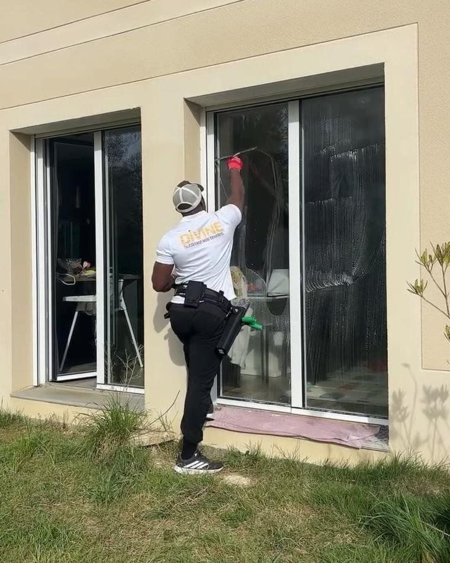

Zones
Le Val-d'Oise et toute l'Île-de-France.
Nettoyage de canapés, de matelas, de tapis et de vitres dans les huit départements franciliens et le sud de l'Oise. Le déplacement est compris dans le prix annoncé.
Commune par communeNos deux métiers,
Nos deux métiers,
partout en Île-de-France.
Votre commune n'est pas citée ? Elle est très probablement desservie. Nous intervenons aussi en limite de l'Oise (60), à Chambly, Chantilly et dans les communes voisines.
Val-d'Oise(95) · 36 communes
- Argenteuil
- Cergy
- Sarcelles
- Franconville
- Garges-lès-Gonesse
- Goussainville
- Bezons
- Pontoise
- Ermont
- Villiers-le-Bel
- Taverny
- Gonesse
- Herblay-sur-Seine
- Cormeilles-en-Parisis
- Saint-Ouen-l'Aumône
- Eaubonne
- Montigny-lès-Cormeilles
- Sannois
- Deuil-la-Barre
- Soisy-sous-Montmorency
- Montmorency
- Osny
- Jouy-le-Moutier
- Vauréal
- Éragny
- Saint-Gratien
- Enghien-les-Bains
- Domont
- Beauchamp
- L'Isle-Adam
- Persan
- Beaumont-sur-Oise
- Auvers-sur-Oise
- Méry-sur-Oise
- Luzarches
- Magny-en-Vexin
Paris(75) · 20 arrondissements
- Paris 1er au 20e arrondissement
Hauts-de-Seine(92) · 25 communes
- Boulogne-Billancourt
- Nanterre
- Asnières-sur-Seine
- Colombes
- Courbevoie
- Rueil-Malmaison
- Issy-les-Moulineaux
- Levallois-Perret
- Antony
- Neuilly-sur-Seine
- Clichy
- Clamart
- Puteaux
- Montrouge
- Suresnes
- Meudon
- Gennevilliers
- Châtillon
- Bagneux
- Bois-Colombes
- Malakoff
- Sceaux
- Saint-Cloud
- Garches
- Vanves
Seine-Saint-Denis(93) · 25 communes
- Saint-Denis
- Montreuil
- Aubervilliers
- Aulnay-sous-Bois
- Drancy
- Noisy-le-Grand
- Pantin
- Le Blanc-Mesnil
- Épinay-sur-Seine
- Bondy
- Sevran
- Bobigny
- Rosny-sous-Bois
- Saint-Ouen-sur-Seine
- La Courneuve
- Neuilly-sur-Marne
- Livry-Gargan
- Gagny
- Villepinte
- Stains
- Clichy-sous-Bois
- Tremblay-en-France
- Les Lilas
- Le Raincy
- Romainville
Val-de-Marne(94) · 24 communes
- Créteil
- Vitry-sur-Seine
- Champigny-sur-Marne
- Saint-Maur-des-Fossés
- Ivry-sur-Seine
- Maisons-Alfort
- Villejuif
- Vincennes
- Fontenay-sous-Bois
- Alfortville
- Choisy-le-Roi
- Cachan
- Le Kremlin-Bicêtre
- L'Haÿ-les-Roses
- Nogent-sur-Marne
- Charenton-le-Pont
- Thiais
- Villeneuve-Saint-Georges
- Saint-Mandé
- Orly
- Bry-sur-Marne
- Boissy-Saint-Léger
- Sucy-en-Brie
- Le Perreux-sur-Marne
Yvelines(78) · 25 communes
- Versailles
- Sartrouville
- Mantes-la-Jolie
- Saint-Germain-en-Laye
- Poissy
- Conflans-Sainte-Honorine
- Montigny-le-Bretonneux
- Les Mureaux
- Trappes
- Plaisir
- Chatou
- Houilles
- Guyancourt
- Le Chesnay-Rocquencourt
- Élancourt
- Maisons-Laffitte
- Vélizy-Villacoublay
- Rambouillet
- Achères
- Le Vésinet
- Croissy-sur-Seine
- Carrières-sous-Poissy
- Verneuil-sur-Seine
- Andrésy
- Triel-sur-Seine
Essonne(91) · 24 communes
- Évry-Courcouronnes
- Corbeil-Essonnes
- Massy
- Savigny-sur-Orge
- Sainte-Geneviève-des-Bois
- Palaiseau
- Athis-Mons
- Viry-Châtillon
- Yerres
- Draveil
- Grigny
- Les Ulis
- Brétigny-sur-Orge
- Montgeron
- Ris-Orangis
- Vigneux-sur-Seine
- Longjumeau
- Étampes
- Juvisy-sur-Orge
- Orsay
- Chilly-Mazarin
- Morsang-sur-Orge
- Verrières-le-Buisson
- Épinay-sous-Sénart
Seine-et-Marne(77) · 24 communes
- Meaux
- Chelles
- Melun
- Pontault-Combault
- Savigny-le-Temple
- Villeparisis
- Torcy
- Bussy-Saint-Georges
- Champs-sur-Marne
- Lagny-sur-Marne
- Roissy-en-Brie
- Combs-la-Ville
- Dammarie-les-Lys
- Fontainebleau
- Provins
- Coulommiers
- Noisiel
- Ozoir-la-Ferrière
- Brie-Comte-Robert
- Mitry-Mory
- Claye-Souilly
- Nemours
- Montereau-Fault-Yonne
- Le Mée-sur-Seine

Prêt à retrouver l'éclat ?
Devis gratuit sous 24 h. Crédit d'impôt de 50 % pour les particuliers. Intervention dans le Val-d'Oise et toute l'Île-de-France.
- Zone
- Val-d'Oise et toute l'Île-de-France, jusqu'au sud de l'Oise
- Disponibilité
- Joignable 7/7 · Interventions du lundi au samedi, créneaux en soirée possibles
- Téléphone
- 06 99 14 25 08